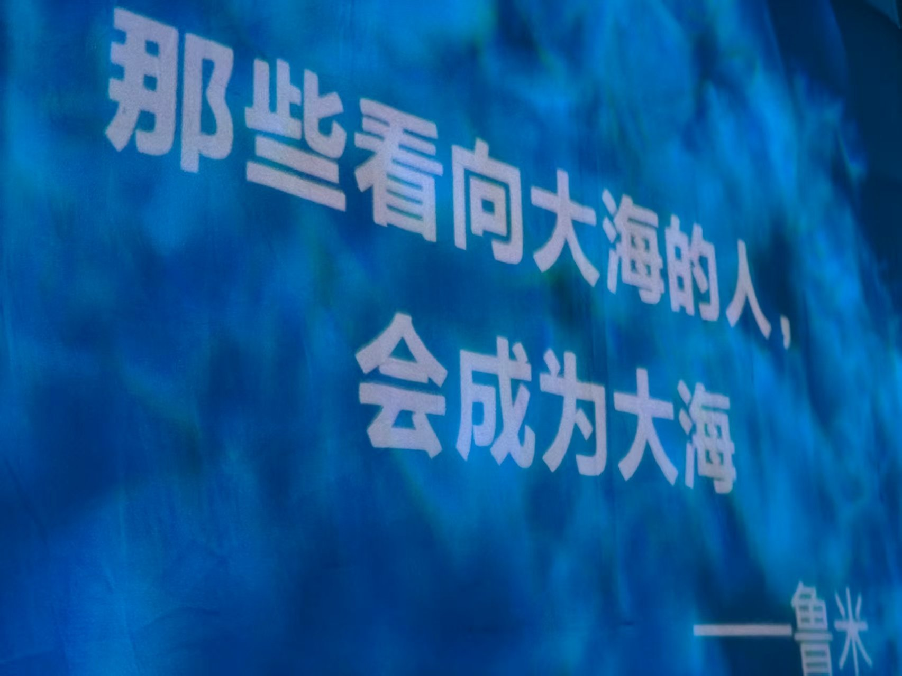

START
故事从这里开始
2019年，一段旅程的起点。从这里出发，我们一路走到了今天。
2019

2019
盛夏寒冬
一切的起点
结束了过去的故事，回忆画上句点，新的旅程开始了。新的生活即将开始，未来将会如何？过去的回忆似乎还是挥之不去，在今年夏天得到答案。
2020
2020-2021
重夏
全新的生活，全新的回忆
全新的生活，全新的回忆，精彩的故事还在继续。全新的回忆，最好的三人组。我们的巅峰。未来可期。活在当下，新的故事继续精彩上演！
2021
2021-2022
模拟校园3
离别并不代表结束
离别并不代表结束，分开并不代表一切。新的故事还在继续。回忆满满，准备迈上新的旅程，迈上成熟。未来的故事依旧精彩，依旧继续。
2023
2023
成都特辑
成都的插曲，思绪万千的见证
生活中的插曲，思绪万千的见证。挥之不去的她。一切问题得到解决。看清迷雾中的道路。这一年的经历让我们更加成熟，也让我们看清了未来的方向。
2026
2026
Z℮R∅零号 时代
全新篇章，正式启航
Z℮R∅零号正式启航，团队成员各司其职，共同打造属于我们的线上家园。从网站建设到线下聚会，每一步都见证着我们的成长与友谊。
5核心成员
20+网站页面
∞精彩故事
官方网站上线
搭建了属于团队的官方网站，包含多个功能模块
团队组建完成
核心成员齐聚，各展所长，共同推动团队向前发展
线下聚会
2026年元旦在西安举行了第一次线下聚会
∞
我们的故事还在继续
每一段时光都值得被铭记，每一个明天都充满期待
一直继续下去